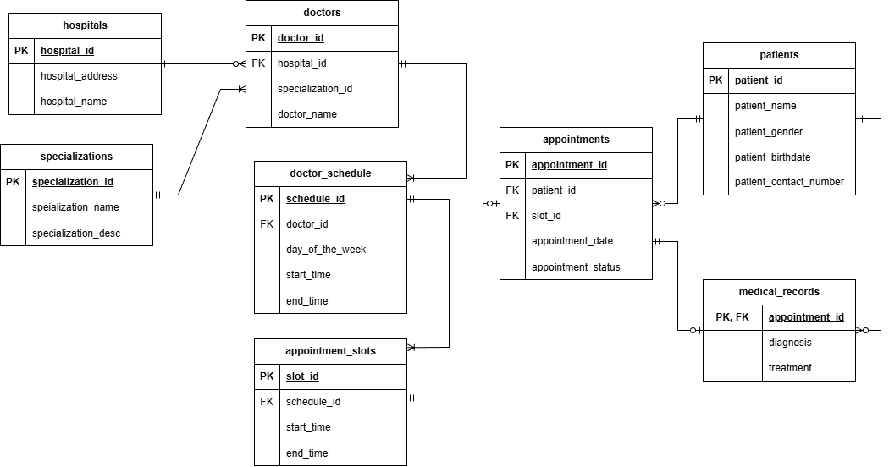

!pip install fakerRequirement already satisfied: faker in /usr/local/lib/python3.12/dist-packages (37.12.0)
Requirement already satisfied: tzdata in /usr/local/lib/python3.12/dist-packages (from faker) (2025.2)This project showcases my capabilities in relational database design, data modeling, and SQL schema implementation. The primary goal was to design an efficient, consistent, and scalable database schema to support the operations of a hospital management system.
The resulting tables has been normalized up to the Third Normal Form (3NF) to minimize data redundancy and ensure data integrity.
Github: Link
CREATE TABLE) scripts, including constraints (PRIMARY KEY, FOREIGN KEY, UNIQUE, CHECK).
Here’s walkthrough on how I design the database system for doctor appointment.
Design and implement a well-structured relational database system for a hospital that covers patient registration, doctor, and appointment management.
From the mission stated above, let’s breakdown the tables needed for the databases.
Clearly, we need patients,doctors, and appointments as tables. We can also add hospitals to accomodate more than one hospital.
| Table | Description |
|---|---|
| patients | stores each patient detailed information |
| doctors | stores each doctor detailed information |
| appointments | stores each appointment detailed information |
| hospitals | stores hospital detailed information |
Now, let’s determine the fields for each tables:
| patients | doctors | appointments | hospitals |
|---|---|---|---|
| patient_id | doctor_id | appointment_id | hopital_id |
| patient_name | hospital_id | patient_id | hospital_address |
| patient_gender | doctor_name | appointment_date | hospital_name |
| patient_birthdate | specialization | doctor_id | |
| patient_contact_number | appointment_status |
Each data will have its own identifier, the _id field, and then the other fields stores the information. However, this table appears to be incomplete as it does not include specific appointment times or doctors’ practice schedules. Doctors usually have practice schedules with specific days and hours. So, to accomodate this we need to add doctor_schedule to our list of tables.
| Table | Description |
|---|---|
| doctors_schedule | stores each doctors schedule |
The field for this table:
| doctors_schedule |
|---|
| schedule_id |
| doctor_id |
| day_of_the_week |
| start_time |
| end_time |
An appointment must have a specific time and be confirmed on the selected doctor’s schedule. So, to make the appointment time more managable, We must divide the doctor’s practice hours into several slots to choose from as the patient’s appointment time.
| Table | Description |
|---|---|
| appointment_slots | stores appointment slot according to each doctor schedule |
The fields for this table:
| appointment_slots |
|---|
| slot_id |
| schedule_id |
| start_time |
| end_time |
Later, we can fill it in automatically from each doctor’s schedule. For example, if a doctor’s consultation is estimated to last 30 minutes, then appointment slots will be created every 30 minutes in their practice schedule.
Finally, we must create a table that stores the results of each doctor’s completed appointment with the patient.
| Table | Description |
|---|---|
| medical_records | stores each patients appointment diagnosis and treatment |
The fields for this table:
| medical_records |
|---|
| appointment_id |
| diagnosis |
| treatment |
Additionally, to prevent inconsistencies of specialization names, We can create validation table for it.
| Table | Description |
|---|---|
| specializations | stores all type of doctor specialization and it’ description |
The fields for this table:
| specializations |
|---|
| specialization_id |
| specialization_name |
| specialization_desc |
And in the patients table we should change the specialization field to specialization_id.
Each table _id field should be the primary key of its table and be a foreign key if it occurs on other table.
Let’s start by determining the relation between hospital and doctor table:
So, the relation of hospital table to doctor table is one-mandatory to many-optional.
Using similar logic and method, we do this for all connected tables and here is the result:
-- Patient
CREATE TABLE patients (
patient_id SERIAL PRIMARY KEY,
patient_name VARCHAR(100),
patient_gender VARCHAR(10) CHECK (patient_gender IN ('Male', 'Female')),
patient_birthdate DATE,
patient_contact_number VARCHAR(100)
);
-- Hospital
CREATE TABLE hospitals(
hospital_id SERIAL PRIMARY KEY,
hospital_name VARCHAR(100) NOT NULL,
hospital_address VARCHAR(100)
);
-- specializations
CREATE TABLE specializations(
specialization_id SERIAL PRIMARY KEY,
specialization_name VARCHAR(100) UNIQUE NOT NULL,
specialization_desc TEXT
);
-- Doctors
CREATE TABLE doctors(
doctor_id SERIAL PRIMARY KEY,
hospital_id INT NULL,
specialization_id INT NULL,
doctor_name VARCHAR(100),
CONSTRAINT fk_specializations
FOREIGN KEY(specialization_id)
REFERENCES specializations(specialization_id)
ON UPDATE CASCADE
ON DELETE SET NULL,
CONSTRAINT fk_hospitals
FOREIGN KEY(hospital_id)
REFERENCES hospitals(hospital_id)
ON UPDATE CASCADE
ON DELETE SET NULL
);
-- Doctor Schedule
CREATE TABLE doctor_schedule(
schedule_id SERIAL PRIMARY KEY,
doctor_id INT,
day_of_week VARCHAR(10),
start_time TIME,
end_time TIME,
CONSTRAINT fk_doctors
FOREIGN KEY(doctor_id)
REFERENCES doctors(doctor_id)
ON DELETE CASCADE
ON UPDATE CASCADE
);
-- Tabel Appointment slot
CREATE TABLE appointment_slots(
slot_id SERIAL PRIMARY KEY,
schedule_id INT,
start_time TIME,
end_time TIME,
CONSTRAINT fk_doctor_schedule
FOREIGN KEY(schedule_id)
REFERENCES doctor_schedule(schedule_id)
ON DELETE CASCADE
ON UPDATE CASCADE
);
-- appointment
CREATE TABLE appointments(
appointment_id SERIAL PRIMARY KEY,
patient_id INT,
slot_id INT NULL,
appointment_date DATE,
appointment_status VARCHAR(20) CHECK (appointment_status IN ('Scheduled', 'Completed', 'Cancelled'))
DEFAULT 'Scheduled',
CONSTRAINT fk_patient
FOREIGN KEY(patient_id)
REFERENCES patients(patient_id)
ON UPDATE CASCADE
ON DELETE CASCADE,
CONSTRAINT fk_appointment_slot
FOREIGN KEY(slot_id)
REFERENCES appointment_slots(slot_id)
ON UPDATE CASCADE
ON DELETE SET NULL,
CONSTRAINT unique_appointment_slot UNIQUE (slot_id, appointment_date)
);
-- medical records
CREATE TABLE medical_records(
appointment_id INT PRIMARY KEY,
diagnosis TEXT,
treatment TEXT,
CONSTRAINT fk_appointments
FOREIGN KEY(appointment_id)
REFERENCES appointments(appointment_id)
ON UPDATE CASCADE
ON DELETE CASCADE
);All data in this project were synthetically generated using Faker and random library in Python.
The following are sample SQL queries you can do on hospital_app-db.
SELECT doctor_name, hospital_name
FROM doctors
LEFT JOIN hospitals
ON doctors.hospital_id = hospitals.hospital_id
LEFT JOIN specializations
ON doctors.specialization_id = specializations.specialization_idOutput: 
CREATE VIEW full_appointments AS
SELECT
a.appointment_id,
a.appointment_date,
a.appointment_status,
p.patient_id,
p.patient_name,
spec.specialization_id,
spec.specialization_name,
d.doctor_id,
d.doctor_name,
h.hospital_name,
h.hospital_address,
s.start_time AS slot_start_time,
s.end_time AS slot_end_time
FROM appointments a
JOIN patients p
ON a.patient_id = p.patient_id
JOIN appointment_slots s
ON a.slot_id = s.slot_id
JOIN doctor_schedule ds
ON s.schedule_id = ds.schedule_id
JOIN doctors d
ON ds.doctor_id = d.doctor_id
JOIN hospitals h
ON d.hospital_id = h.hospital_id
JOIN specializations spec
ON d.specialization_id = spec.specialization_id;
SELECT *
FROM full_appointmentsOutput: 
SELECT *
FROM full_appointments
WHERE appointment_status = 'Scheduled'Output: 
SELECT appointment_date, patient_name, diagnosis, treatment
FROM medical_records
JOIN appointments
on medical_records.appointment_id = appointments.appointment_id
JOIN patients
ON appointments.patient_id = patients.patient_idOutput: 
INSERT INTO appointments (patient_id, slot_id, appointment_date, appointment_status)
VALUES (7, 25, '2025-11-15', 'Scheduled');SELECT
doctor_name,
COUNT(doctor_name) AS appoinment_count,
specialization_name
FROM full_appointments
GROUP BY doctor_name, specialization_name
ORDER BY appoinment_count DESC
LIMIT 5Output: 
SELECT
doctor_name,
COUNT(doctor_name) AS appoinment_count,
specialization_name
FROM full_appointments
WHERE appointment_status = 'Completed'
GROUP BY doctor_name, specialization_name
ORDER BY appoinment_count DESC
LIMIT 5Output: 
SELECT
specialization_name,
COUNT(specialization_name) AS spec_count
FROM full_appointments
WHERE appointment_status = 'Cancelled'
GROUP BY specialization_name
ORDER BY spec_count DESC
LIMIT 5Output: 
SELECT
specialization_name,
COUNT(DISTINCT patient_name) AS patient_count
FROM full_appointments
GROUP BY specialization_name
ORDER BY patient_count DESC
LIMIT 5Output: 
SELECT
hospital_name,
specialization_name,
COUNT(specialization_name) AS spec_count
FROM doctors
JOIN hospitals
ON doctors.hospital_id = hospitals.hospital_id
JOIN specializations
ON doctors.specialization_id = specializations.specialization_id
GROUP BY hospital_name, specialization_name
ORDER BY hospital_name, specialization_name, spec_countOutput: